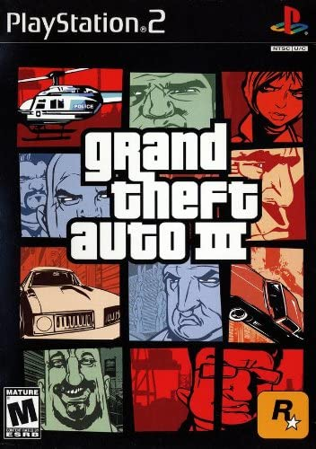
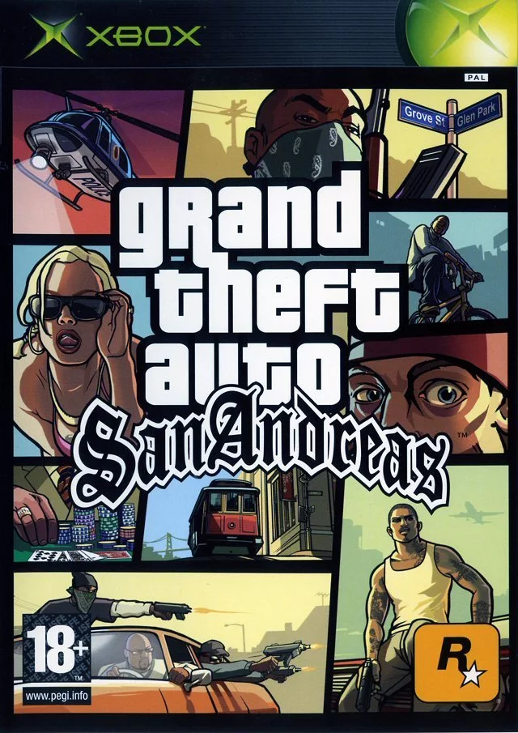
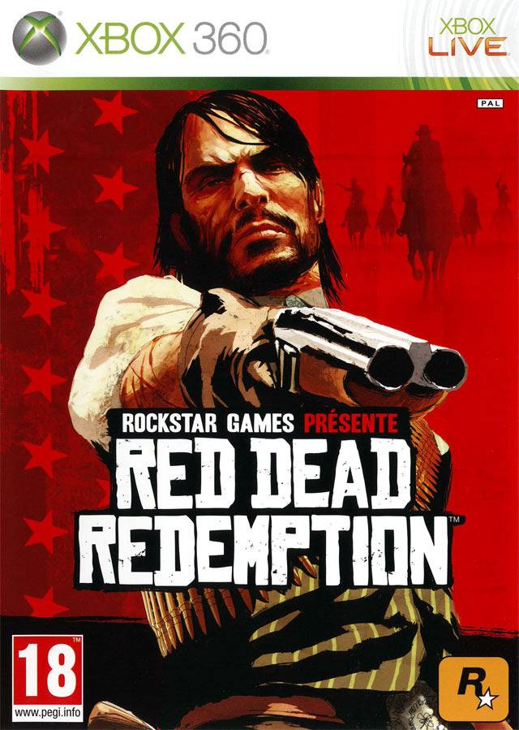
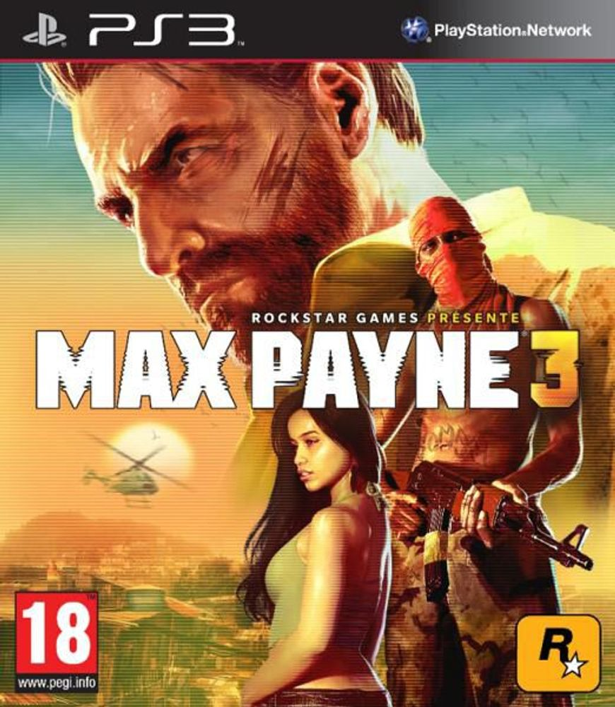
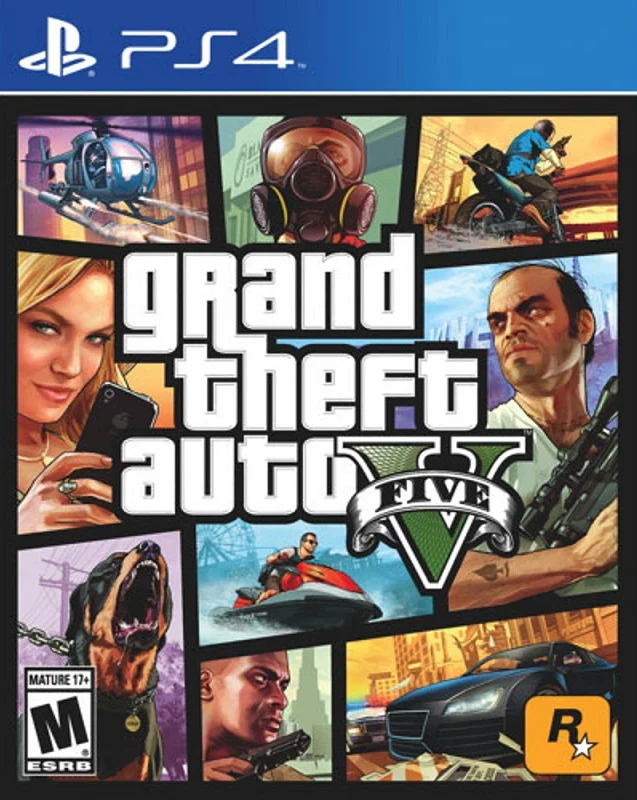
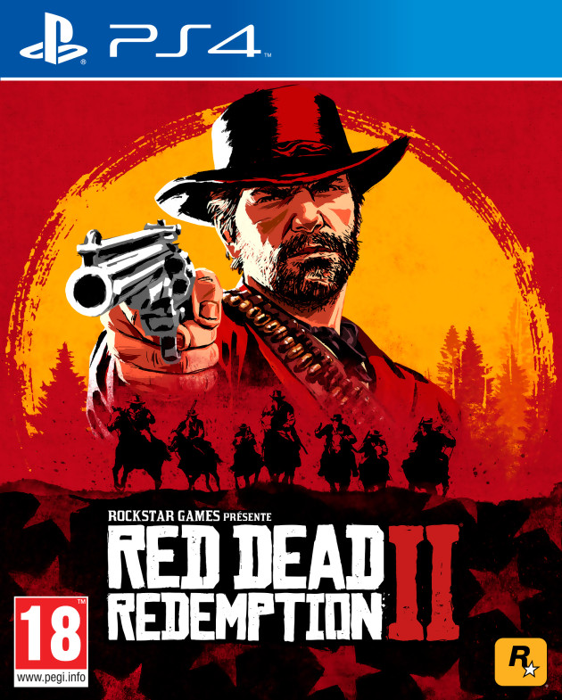

GTA 3 est un jeu d'action-aventure sorti en 2001. Le joueur incarne un criminel anonyme qui cherche à se venger de ses anciens complices. Le jeu se déroule dans la ville fictive de Liberty City, inspirée de New York. Le gameplay se concentre sur l'exploration de la ville et la réalisation de missions criminelles. 
GTA San Andreas est un jeu d'action-aventure sorti en 2004. Le joueur incarne CJ, un gangster qui retourne dans sa ville natale de Los Santos pour venger la mort de sa mère. Le jeu se concentre sur la réalisation de missions pour différents gangs, ainsi que sur l'exploration de la ville fictive de San Andreas, inspirée de la Californie. Le jeu a été acclamé pour son histoire riche et complexe, son monde ouvert vaste et détaillé, et ses nombreuses fonctionnalités de gameplay. 
GTA 4 est un jeu d'action-aventure sorti en 2008. Le joueur incarne Niko Bellic, un immigré qui arrive à Liberty City pour y trouver le rêve américain. Le jeu se concentre sur la réalisation de missions pour différents criminels, ainsi que sur l'exploration de la ville et l'interaction avec ses habitants. Le jeu a été acclamé pour sa narration immersive et ses personnages complexes.

Red Dead Redemption est un jeu d'action-aventure sorti en 2010. Le joueur incarne John Marston, un ancien hors-la-loi qui doit chasser les membres de son ancien gang pour sauver sa famille. Le jeu se déroule dans une version fictive de l'Ouest américain à la fin du XIXe siècle. Le gameplay se concentre sur l'exploration du monde ouvert, la réalisation de missions pour différents personnages et les combats à feu et au corps à corps. Le jeu a été acclamé pour son histoire captivante, ses personnages mémorables et son monde ouvert magnifiquement réalisé. 
Max Payne 3 est un jeu de tir à la troisième personne sorti en 2012. Le joueur incarne Max Payne, un ancien policier de New York qui travaille maintenant comme garde du corps au Brésil. Lorsque sa cliente est enlevée, Max se lance dans une mission pour la sauver et découvrir la vérité sur les événements qui ont conduit à son enlèvement. Le gameplay se concentre sur les combats intenses, l'utilisation du bullet time et l'histoire sombre et cinématographique du jeu. 
GTA 5 est un jeu d'action-aventure sorti en 2013. Le joueur incarne trois personnages : Michael, Franklin et Trevor, qui se lancent dans une série de braquages à travers la ville fictive de Los Santos, inspirée de Los Angeles. Le jeu propose une grande variété d'activités, de missions et de défis, ainsi qu'un mode multijoueur en ligne appelé "GTA Online". Le jeu a été salué pour sa qualité graphique, son gameplay innovant et sa richesse de contenu. 
Red Dead Redemption 2 est un jeu d'action-aventure sorti en 2018. Le joueur incarne Arthur Morgan, un hors-la-loi dans une bande en cavale à travers l'Ouest américain. Le jeu se concentre sur l'histoire de la bande de Dutch Van Der Linde, leurs interactions avec le monde et les choix moraux que doit faire Arthur. Le gameplay propose un monde ouvert vaste et détaillé, des personnages mémorables et des éléments de survie tels que la chasse et la pêche. 